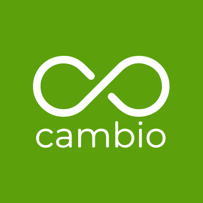

Cambio
UX Research & UI Design
Introduction
In recent years, employers and job seekers have seen major changes to recruiting. Job seekers can search digital job boards, post their resumes across dozens of sites, and reach out directly to recruiters on websites like AngelList and LinkedIn. However, for recruiters, with the exception of LinkedIn where they can reach out directly to promising candidates, not much has changed. Instead of reviewing paper resumes, they are now seeing hundreds of digital resumes and profiles. With all the advances in technology, true life and personality has been left out of the hiring process. Cambio looks to change the job hunt and bring individuality into the recruitment process. In Spanish, Cambio means “change”. In an effort to change the stale process, Cambio has created a video platform to allow each job applicant to personalize their application.
Challenge
A 3 week sprint we were asked to research and design an initial mockup, for the job seeker side of the mobile application, with swipe features and video recording features. My team consisted of an engineering manager, two front-end developers, and a member of the marketing team.
Research
Explore
Cambio was drawn to the easy swiping features being utilized in dating apps like Tinder and Bumble. They liked the ease in which a user can quickly choose between two possible interactions. I set out to understand what made the swiping interaction a powerful tool and how it could be applied to users looking for their next career opportunity.
Listen
I created a 15 question survey to better understand the pain points of job seekers and hiring managers. In total, 60 people were surveyed: 30 job seekers and 30 members of hiring teams.
Synthasizes
We created an affinity map to analyze the data from the survey. Key takeaways from job seekers:
- ‣ Users said ATS systems are a dead end.
- ‣ Users said meeting an employee of a potential company at an event or meetup provides a better opportunity into their hiring process.
- ‣ Users said resumes do not adequately depict everything they have to offer an employer.
- ‣ Users are frustrated when they do not hear back from a job application.
- ‣ Users are frustrated when they do not receive valuable feedback after an interview.
User
- Name: Brian T.
- Age: 25
- Location: Austin, TX.
- Industry: Marketing
In order to frame the conversation with my team, I created Brian. Two weeks ago, due to company downsizing, Brain was let go from her role as a Marketing Manager. He has been applying to jobs and reaching out to recruiters on Indeed and LinkedIn. She is receiving generic rejection letters from ATS systems and rarely does she receive any reply from recruiters.
Design Principles
Empathize
Users will feel vulnerable upon uploading a video of themselves. User information should be private and secure.
Simple
The signup should be free of clutter and relatively quick.Users should be applying to jobs shortly after signing up for an account. Applying to jobs should be easy.
Empowerment
Users should have control of their job search. Profiles should be tailored to their preferences. Users should have the ability to present more than just words on a screen.
Wireframes
Taskflow
We three different paths for the task flow of new users interacting with the app for the first time: Onboarding, uploading personal videos and browsing jobs.
Lo-Fi
We three different paths for the task flow of new users interacting with the app for the first time: Onboarding, uploading personal videos and browsing jobs.
Style Expoloration
After doing visual competitive analysis and doing a couple of moodboards we came up with this style tile to establish the identity of the brand and for our High fidelity mockups. Keeping our design principles in mind we wanted to come with a style that felt Empowering, Simple and Empathetic.
Prototype & Testing
Applying the UI elements we came up with 2 concepts that the user could identify and as their favorite and pick a winner from those 2.
Refine & Ideate
With each concept the user was able to stay in line with out design principle. Based on our feedback I went and identified other key concepts the could brushed up on using our design principles. Choosing the success message for creating and active profile and profile page.